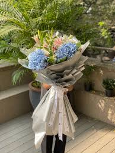
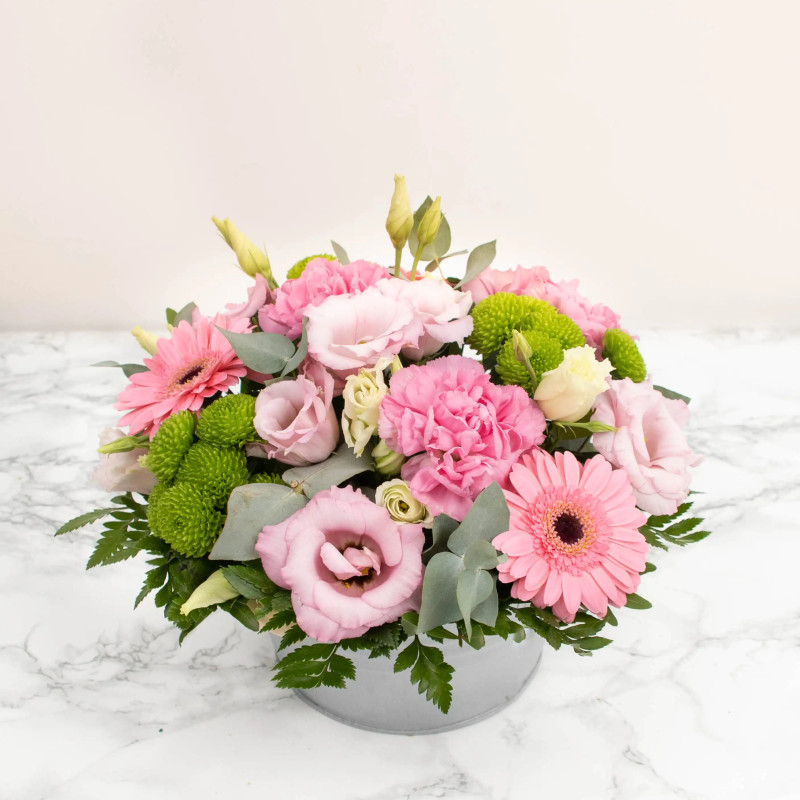
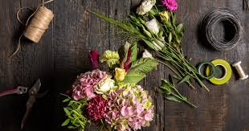
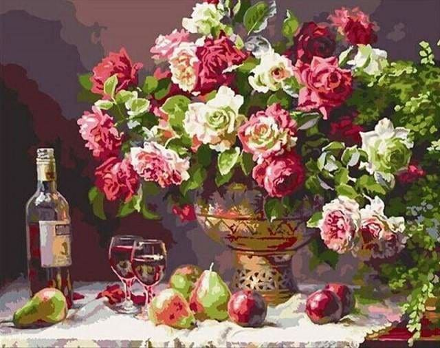

"Une seule fleur vous manque, et tout votre vase est dépeuplé"

Et si on arrêtait d'attendre l'évènement avec un grand E pour offrir un bouquet ? Pourquoi ne pas simplement égayer une pièce, découvrir de nouvelles fleurs, ou juste se faire plaisir toute l'année ?
Alors chez Arrosé, on vous propose des abonnements de bouquets de saisons modulables pour combler tous les amoureux de fleurs.
Plus de détails… PDF téléchargeable



*Hep hep hep, Arrosé, ce n'est pas qu'un fleuriste si ?
Pourquoi se refuser les plaisirs qui s'offrent à nous… Eh oui, vos fleurs peuvent s'accompagner de vins si vous le désirez.
Même principe, le nombre de bouteilles, le budget, la fréquence, tout est personnalisable !
En fonction de vos préférences, passez en boutique : Tanguy se fera un plaisir d'échanger avec vous à ce sujet.
Et si les fleurs ça ne vous intéressent pas mais que la découverte du monde de l'œnologie si ? → Voir les dégustations
